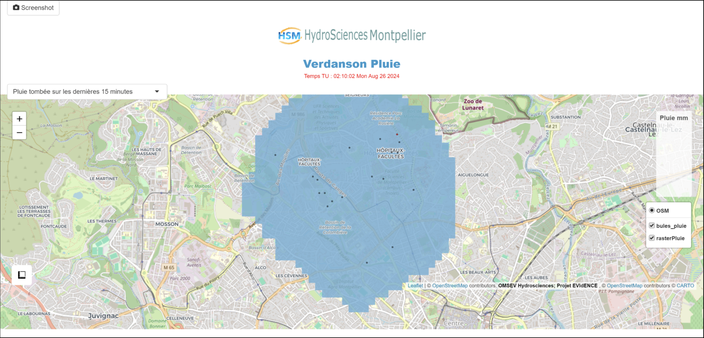
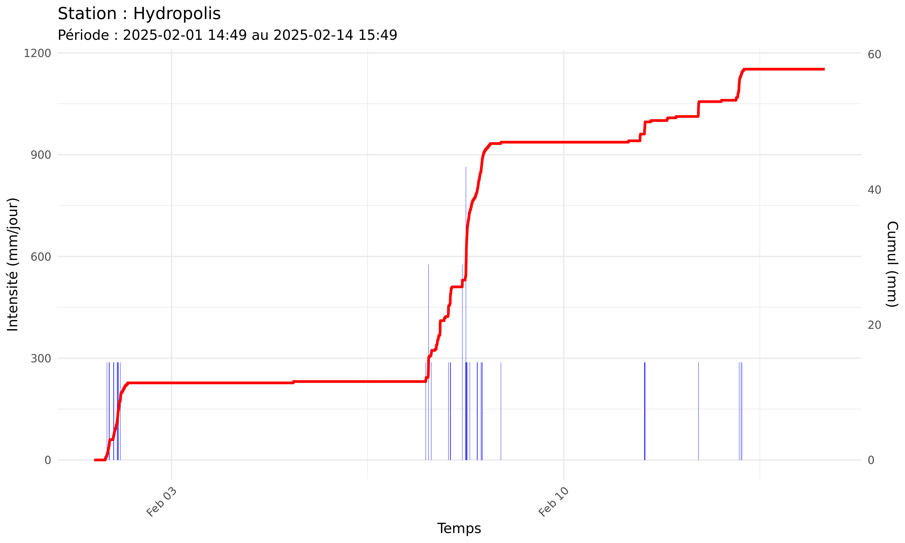
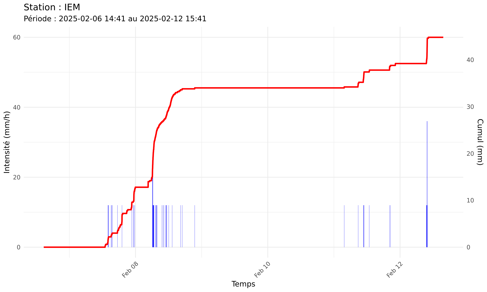
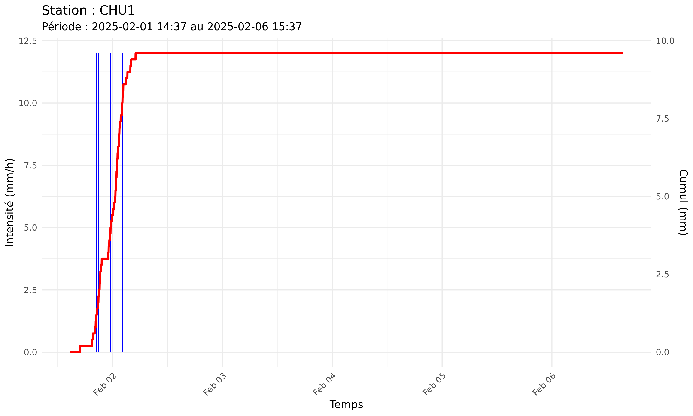

// stage de 4ème année · juin—août 2024 · 3 mois
Hydrosciences.
Data Ops — pipeline de données pluviométriques : collecte FTP, calibration, matrices creuses, applications Shiny.
// Contexte
Stage au laboratoire Hydrosciences Montpellier (HSM, UMR CNRS/IRD/Université de Montpellier). Le projet concerne la gestion des données de pluviométrie du bassin versant du Verdanson (cours d'eau urbain de Montpellier).
Le problème : les pluviomètres généraient en continu des fichiers bruts sur un serveur FTP, qui s'accumulaient sans traitement, rendant l'analyse manuelle de plus en plus difficile. Avec le changement climatique et l'augmentation des événements pluvieux extrêmes, la gestion des risques d'inondation devient un enjeu crucial.
La solution de sauvegarde externe repose sur pCloud (stockage à vie), garantissant la sécurité des données sans dépendance à un NAS physique.
// Pipeline
flowchart LR
FTP["FTP (données brutes pluviomètres)"] --> MP
MP["main_process.py (cron régulier)\nTéléchargement FTP · Concaténation par année + station\nCalibration · Matrices creuses (HDF5 + MTX)\nSuppression des fichiers originaux"]
MP --> CP
CP["cumul_process.py (cron quotidien)\nTéléchargement des données concaténées\nCumuls 7 derniers jours · Fichiers CSV journaliers"]
CP --> SHINY
SHINY["Applications Shiny (R)"]
SHINY --> VP["VerdansonPluie : carte IDW 7 jours"]
SHINY --> GP["gestionPluvio : analyse période custom"]
// Application Shiny · VerdansonPluie

Application R/Shiny — carte interactive avec interpolation IDW
// Visualisation
- ▸ Carte Leaflet avec interpolation IDW (gstat)
- ▸ Bulles proportionnelles à l'intensité
- ▸ Masque pour limiter la zone d'étude
// Fonctionnalités
- ▸ Téléchargement des données journalières
- ▸ Pas de temps configurable (15min → 72h)
- ▸ Génération automatique via cron
// Graphiques pluviométriques

Station Hydropolis

Station IEM

Station CHU1
// Points techniques
// Matrices creuses
Stockage HDF5 + MTX (scipy.sparse) pour les données pluvio compressées — économie d'espace significative vs fichiers plats.
// Calibration automatique
Module de calibration des données brutes avant concaténation et stockage — suppression des fichiers d'origine pour éviter l'accumulation FTP.
// Interpolation IDW
Inverse Distance Weighting (gstat, R) pour estimer les cumuls entre stations pluviométriques sur la carte Leaflet.
// Automatisation cron
Deux cron jobs : main_process (récupération + calibration + stockage) et cumul_process (cumuls quotidiens + CSV).